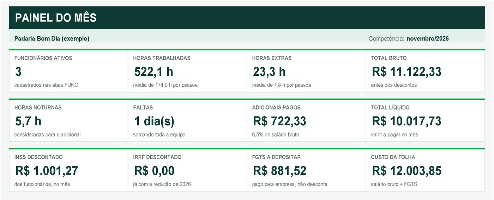
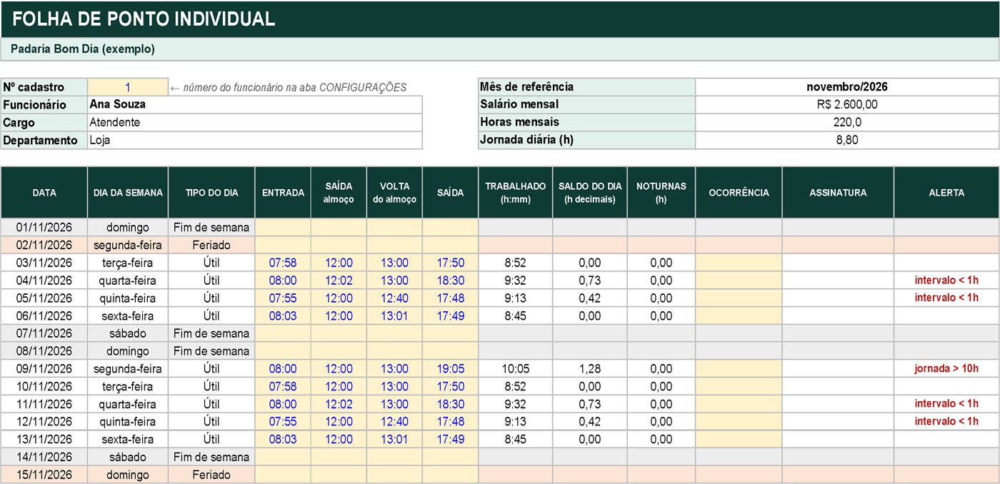
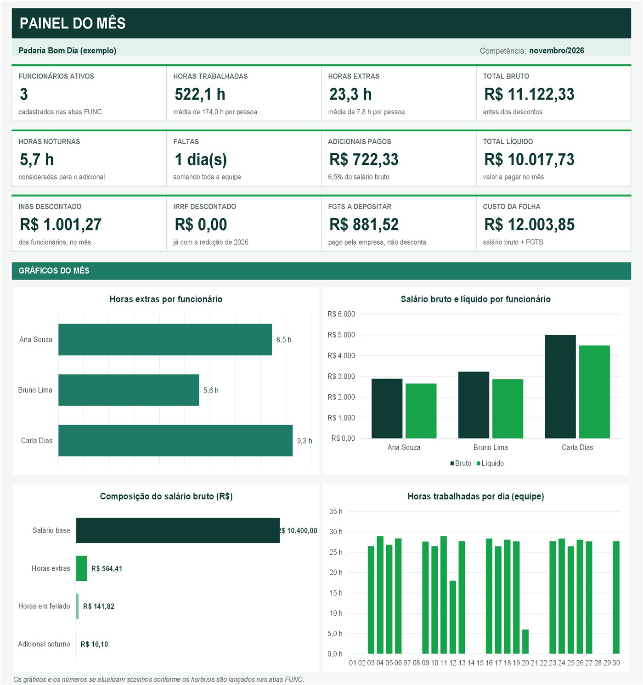

Feche a folha de ponto do mês em minutos, sem calculadora.
Você lança os horários. Ela calcula horas extras, noturno, INSS, IRRF e FGTS, e entrega a folha de cada funcionário pronta para assinar.
- Horas extras com a tolerância de marcação da CLT (até 10 minutos por dia)
- INSS por faixas e IRRF já com a redução de 2026 (isento até R$ 5 mil)
- Jornada de 44, 42 ou 40 h por semana: mude um número e tudo se ajusta

Conferir ponto na calculadora toma o seu fim de mês
Somar horas não é como somar números: 60 minutos viram uma hora, o turno da noite atravessa o dia e cada feriado muda a conta. Um erro pequeno vira pagamento errado.
Na calculadora ou no caderno
- Quatro subtrações por dia, para cada funcionário
- Converter minutos em horas decimais à mão
- Separar o horário noturno e aplicar a hora reduzida
- Lembrar quais dias foram feriado no mês
- Descobrir a batida esquecida só na hora de pagar
Com a Calcula Ponto
- Você digita só os horários. O resto aparece calculado
- Saldo do dia em horas decimais, pronto para multiplicar
- Horas noturnas separadas, com hora reduzida opcional
- Feriados cadastrados uma vez e pagos em dobro
- O alerta mostra a batida faltando na mesma linha
Mude os horários e veja o cálculo
Este teste usa as mesmas regras da planilha: jornada de 44, 42 ou 40 h por semana em 5 dias, tolerância de 10 minutos por dia e adicional noturno das 22h às 5h.
Resultado do dia
- Sem alertas neste dia.
Saldo positivo entra como hora extra no fechamento do mês.
Tudo o que o fechamento do ponto pede, num arquivo só
Calendário e feriados
Digite qualquer data do mês e todas as folhas se ajustam. Os feriados cadastrados saem separados, pagos em dobro.
Horas extras com tolerância
Multiplicador ajustável (50% ou o da sua convenção) e tolerância diária configurável, como no art. 58 da CLT.
Adicional noturno
Período noturno e percentual ajustáveis, hora reduzida de 52min30s opcional e turno que vira a meia-noite numa linha só.
13º e férias
13º com as duas parcelas e férias com 1/3 e venda de 10 dias, já com INSS, IRRF, FGTS e a data limite de pagamento.
Faltas e ocorrências
Marque falta, atestado, folga ou férias na linha do dia. As faltas entram como desconto no fechamento.
Alertas na hora
Batida faltando, intervalo menor que 1 hora e jornada acima de 10 horas aparecem destacados na própria linha.
INSS, IRRF e FGTS
INSS por faixas, IRRF já com a redução de 2026 (isento até R$ 5 mil) e FGTS da empresa, até o valor líquido de cada funcionário.
Painel com gráficos
Os números do mês em destaque e 4 gráficos: horas extras, bruto e líquido, composição da folha e horas por dia. Mais o resumo de toda a equipe.
Pronta para imprimir
Folha individual em uma página, com coluna de assinatura. As fórmulas ficam protegidas contra apagamento acidental.
Quatro passos, e a primeira folha sai no mesmo dia
Configure
Nome da empresa, mês de referência e as regras: hora extra, feriado, tolerância e noturno.
Cadastre a equipe
Nome, cargo, salário e jornada semanal de até 10 funcionários. Horas mensais e jornada diária saem sozinhas.
Lance os horários
Na aba de cada funcionário, digite as 4 marcações do dia. O cálculo aparece na mesma linha.
Feche o mês
Confira o Painel e o Resumo, imprima as folhas individuais e colha as assinaturas.


Feita para quem fecha o ponto sozinho
É para você se…
- Tem um comércio, escritório, clínica, restaurante ou oficina com até 10 funcionários
- Recebe o ponto em papel, relógio ou aplicativo e precisa fazer as contas
- Quer conferir horas extras e noturno antes de mandar para o contador
- Prefere pagar uma vez em vez de assinar um sistema todo mês
Não é para você se…
- Precisa de um registro eletrônico de ponto homologado
- Precisa calcular rescisão ou DSR sobre horas extras
- Tem mais de 10 funcionários
- Não usa Excel no computador
Leve a planilha completa hoje
Um pagamento, sem mensalidade. Use todos os meses, com até 10 funcionários.
- Arquivo Excel (.xlsx) com 10 abas: Início, Configurações, Painel, Resumo, 3 folhas de funcionário (você cria até 10), 13º salário, Férias e Tabelas
- Painel do mês com 4 gráficos e conferência por funcionário
- Horas extras, adicional noturno, feriados, faltas, INSS, IRRF e FGTS
- 13º salário em duas parcelas e férias com 1/3
- Folha individual pronta para imprimir e assinar
- Guia de uso dentro da própria planilha
- Sem macros e sem instalação
Compra processada com segurança pela Hotmart. Você recebe o acesso no e-mail assim que o pagamento é aprovado.
Perguntas frequentes
Como recebo a planilha?
Depois que o pagamento é aprovado, a Hotmart envia o acesso para o seu e-mail. Pix e cartão costumam liberar na hora; boleto leva até 3 dias úteis para compensar.
Em qual programa ela funciona?
Ela foi feita para o Microsoft Excel no computador. Não usa macros, então abre sem avisos de segurança.
Preciso entender de fórmulas?
Não. Você preenche só as células amarelas: dados da empresa, funcionários e horários. Tudo o que é calculado fica protegido para não ser apagado sem querer.
Serve para qualquer mês e ano?
Sim. Basta digitar uma data do mês em Configurações e todas as folhas se ajustam. Para começar um mês novo, salve uma cópia do arquivo e apague os horários.
E se eu tiver mais de 3 funcionários?
A planilha vem com 3 folhas prontas e aceita até 10. Para cada pessoa a mais, duplique uma aba (botão direito na aba, Mover ou copiar, Criar uma cópia), renomeie para FUNC 04, FUNC 05... e troque o número do cadastro. Ela entra sozinha no Resumo e no Painel.
Posso mudar o percentual da hora extra e do noturno?
Pode. Hora extra, hora em feriado, tolerância, adicional noturno, horário noturno e hora reduzida são ajustáveis em Configurações, para seguir a convenção da sua categoria.
A planilha substitui o relógio de ponto ou o contador?
Não. Ela faz as contas a partir dos horários que você já registra. Não é registro de ponto homologado e não calcula rescisão nem DSR sobre horas extras. Use os valores para conferir e envie ao seu contador.
Tem mensalidade?
Não. Você paga R$ 49,90 uma vez e usa o arquivo todos os meses.